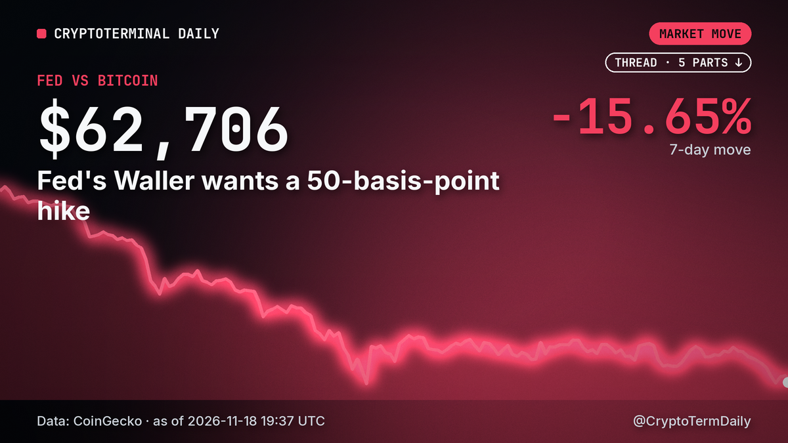

A Fed hawk wants to shock the market, and Bitcoin flinched

Bitcoin spent Wednesday trading like an asset that has just been told the cost of money may go up faster than planned. The trigger was Federal Reserve Governor Christopher Waller, who used a CNBC interview to argue for a 50-basis-point rate hike at the December meeting. Investors had been bracing for a smaller move.
What Waller actually said
Waller's position is that the Fed has two options. It can raise rates by half a point at its December 8-9 meeting, or it can say plainly that another hike will follow in January. Anything less, in his view, risks letting people believe that inflation near 3% is simply the new normal.
His argument rests on recent data. Core consumer prices rose 0.3% in each of the last three months, a pace that works out to roughly 3.5% a year, well above the Fed's 2% goal. Waller had already set a marker on November 10, saying another 0.3% core reading would make him consider a half-point move. October inflation delivered it, with headline prices up 0.4% and core up 0.3%, both above forecasts.
The part that bothers him most is behavioral. He worries that companies are growing comfortable passing on price rises of 3% or higher, and that the habit is spreading to parts of the economy that have nothing to do with the US-Iran war or the jump in oil prices. He put the share of core services items running above 3% at about 70%. In his words, the Fed may need to shock people into rethinking what a normal inflation rate looks like.
Where the market stands
The gap between Waller and the crowd is the whole story. According to CME Group's FedWatch tool, traders still put the odds of a 25-basis-point hike in December above 95%. Futures also price another increase in January, per CNBC as relayed by Bitcoin Magazine. A 50-point move would therefore be a surprise, and surprises are what leveraged crypto positions tend to dislike.
The reaction in other markets was swift. The two-year Treasury yield climbed more than 4 basis points to 4.83%. The dollar reached a 19-month high. Gold dropped about 2.5% to its lowest level in more than a year, a notable move for an asset usually seen as a hedge against exactly this kind of worry.
Not everyone agrees
Waller is not speaking for the whole committee. Economist Robin Brooks countered in a Tuesday analysis that the hawks have not shown underlying inflation is hot once supply shocks are set aside. He pointed to the recent cooling in oil prices as a reason the extra tightening is unnecessary.
The committee itself was split last month. At the October 27-28 meeting, policymakers held rates at 3.75% to 4% on a 10-2 vote, with two officials, Lisa Cook and Beth Hammack, preferring a hike. St. Louis Fed President Alberto Musalem has also suggested that as many as four hikes could come by spring. So the debate inside the Fed is about how fast and how far, which is a harder message for risk assets than a simple pause.
What it meant for Bitcoin
Bitcoin slipped below $63,000 after the Wall Street open, down about 3% on the day at one point, as US stocks dipped on inflation worries. An earlier lift from Nvidia's earnings faded through the morning. Nvidia had reported third-quarter revenue of $115.84 billion, above the $109.1 billion analysts expected, yet the optimism did not last once Waller started talking.
The bigger picture is not friendly. A month ago Bitcoin changed hands above $81,000, so it has lost about 21% since. Prediction markets on Myriad showed a 69% chance of Bitcoin trading below $64,000 and an 85% chance of it falling below $66,000 within the week, though those odds are crowd estimates and not forecasts we endorse.
Options traders were positioning for turbulence well before the CNBC interview. CryptoSlate, citing Pandabull's Deribit data, reported that the volatility premium on puts versus calls for contracts expiring November 19 rose to 8.92 points from 5.08 over four hours, a faster widening than for later expiries. That is a sign of traders paying up for short-term protection ahead of the Fed minutes.
What to watch
Three things matter from here. First, the minutes of the October meeting, released Wednesday at 19:00 UTC, which should show how many officials leaned toward hiking. Second, the next inflation prints, since Waller has tied his stance to the data. Third, whether other voters on the committee echo his call for 50 or stay with the market's expectation of 25.
One governor's interview is not policy. But Waller has been explicit about his triggers, and the data has met them once already. If his colleagues start to agree, the December meeting could carry more weight for Bitcoin than the market currently prices in. If they do not, the 25-point consensus holds, and Wednesday's wobble may prove to be a headline reaction more than a turning point.